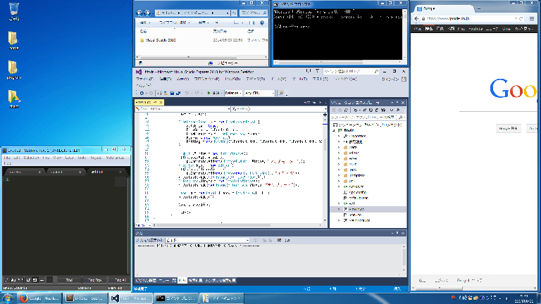
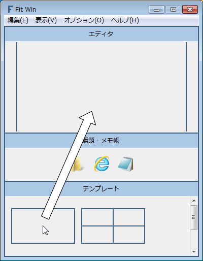

Fit Win
ウィンドウの移動・サイズ変更ツール
簡単な操作で強力なウィンドウの移動・サイズ変更
マルチモニターでも簡単
キーボードのみの操作でも簡単

こんなに複雑なウィンドウ配置でも簡単に作れます
基本的な使い方
テンプレートをクリックすると、そのテンプレートをエディタで開きます

エディタを右クリックして分割
ボーダーをドラッグして移動
ボーダーを右クリックして削除

アイコンをエディタやテンプレートにドラッグ＆ドロップして移動・サイズ変更

アイコンを左クリックして、ウィンドウをアクティブ
アイコンを右クリックして、ウィンドウを操作

テンプレートをドラッグ＆ドロップして並び替え
テンプレートを右クリックして削除
エディタを追加ボタンを押して、エディタの編集をテンプレートに追加

マルチモニター環境での使い方
モニターをクリックして選択
アイコンをドラッグ＆ドロップすると、選択されたモニターに移動・サイズ変更されます
マルチモニターが非表示のときは、プライマリモニターに移動・サイズ変更されます

キーボードのみの操作での使い方
アイコンに表示されている文字列をタイプして選択
テンプレートに表示されている文字列をタイプして移動・サイズ変更
例えば、メモ帳をモニター右上に移動・サイズ変更するときは、ESKとタイプします

| 閉じる | Esc |
| タイプを元に戻す | Back space |
| 次のモニターを選択 | Space |
| 前のモニターを選択 | Shift + Space |
| 右のアイコンを選択 | →, Tab |
| 左のアイコンを選択 | ←, Shift + Tab |
| 上のアイコンを選択 | ↑ |
| 下のアイコンを選択 | ↓ |
| ウィンドウをアクティブ | Enter |
| ウィンドウを操作 | ; |